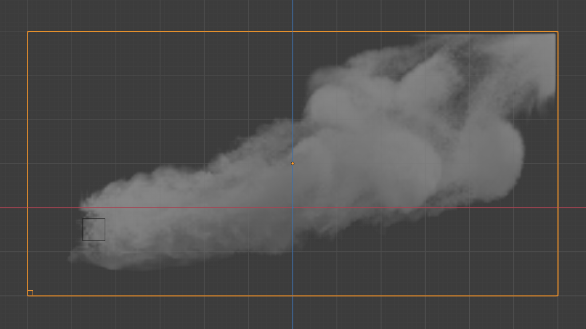

Noise¶
Reference
- Type
Domain
- Panel
Adding noise to the gas simulation creates a finer detailed looking simulation on top of the base. This makes it possible to add more details to gases (i.e. fire or smoke or both) without changing the overall fluid motion.
Xem thêm
Fluid noise is an implementation of Wavelet Turbulence for Fluid Simulation.
Besides enabling parts of the interface, checking Noise lets the cache know which simulation data to read. If, for example, Noise is enabled but there is no noise simulation data to read it will show an empty domain. The checkbox does not reset the cache and can be used to switch the view between base resolution and noise view.
- Upres Factor
Factor by which to enhance the resolution of the noise. The scaling factor is coupled to the Resolution Divisions.
- Method
The method used to create the noise. "Wavelet" turbulence is currently the only method available.
- Strength
Strength of the noise. Higher values result in more turbulent vortices.
- Scale
Scale of the noise. Greater values result in larger vortices.
- Time
Animation time of the noise. This value has an influence on where the noise field is evaluated. It can be used as a seed to give wavelet noise a slightly different look in two domains that are otherwise the same.
Smoke plume with varying animation time. While the fluid motion of all four smoke plumes are alike each example has a unique look.¶ 
Animation Time: 0.1¶

Animation Time: 1.0¶
Animation Time: 2.5¶

Animation Time: 10.0¶
Ghi chú
Resolution Divisions and Upres Factor are not equivalent. By using different combinations of these resolution settings, you can obtain a variety of different styles of smoke.
Comparison of fire simulations with and without noise at the same grid resolution.¶ 
Resolution Division: 200, without noise¶

Resolution Divisions: 100, Noise scale: 2.¶
Low division simulations with lots of Upres Factor divisions generally appear smaller in real-world scale and can be used to achieve pyroclastic plumes such as in the following image:

- Bake Noise, Free Noise
This option is only available when using the Modular cache type.
The progress will be displayed in the status bar. Pressing Esc will pause the simulation.
Once the simulation has been baked, the cache can be deleted by pressing Free Noise. It is possible to pause or resume a Bake Noise process.